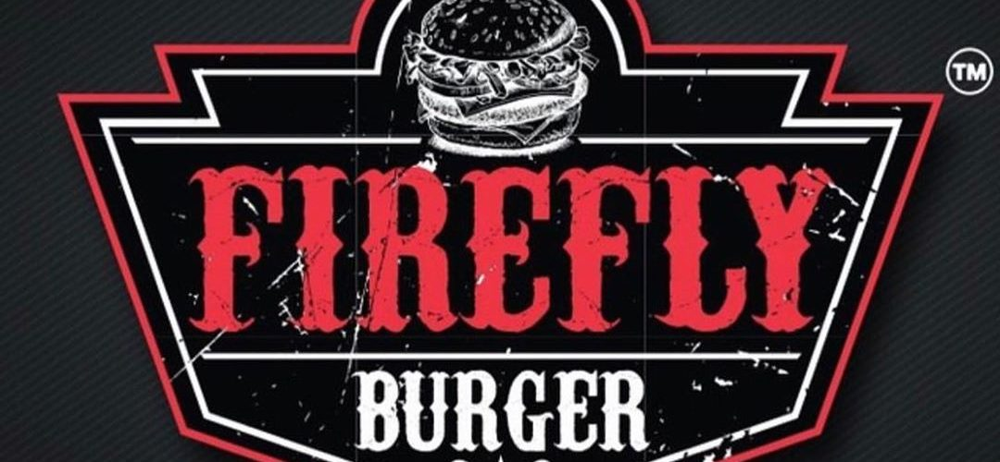

دعم المنتجات المحليه
ماتريكس:هو مشروب غازي محلي بديل البيبسي و كوكاكولا وهي من شركة ضفاف النهرين التي لها 20 علامه تجاريه واحدى ابرز منتجي المشروبات
مستر شيبس:هو منتج محلي معروف على مستوى شرق الاوسط, فهو من تاسيس شركة مذيب حداد و اولاده ولها اكثر من 10علامات تجاريه
فاير فلاي :يعتبر مطعم فايرفلاي الذي تم عامه الحاديه عشر منذ تأسيسه عام 2012 من أهم مطاعم تقديم الوجبات السريعة في مجال البرغر المشوي وهو الآن يمتد بفروعة الستة عشر عبر بلدان الشرق الاوسط ومن أهمها دول الخليج كافع و العراق و فلسطين